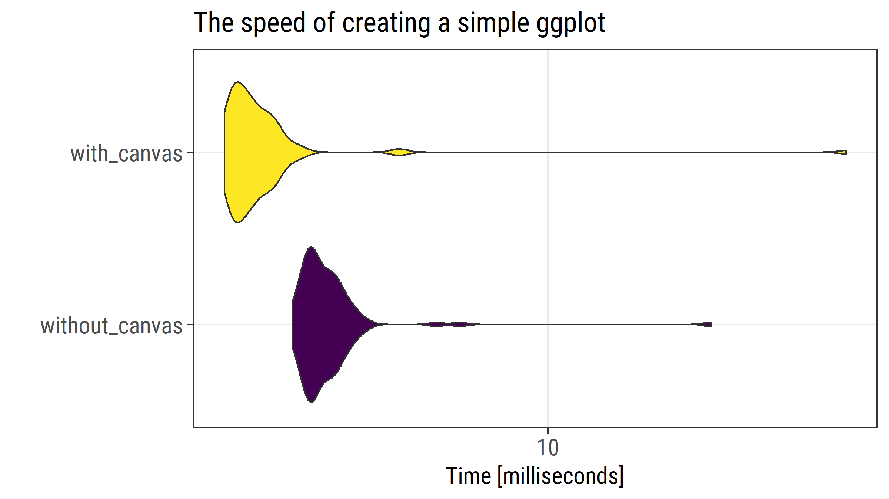
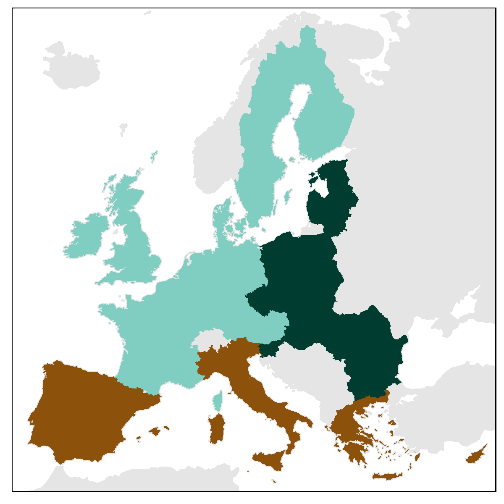
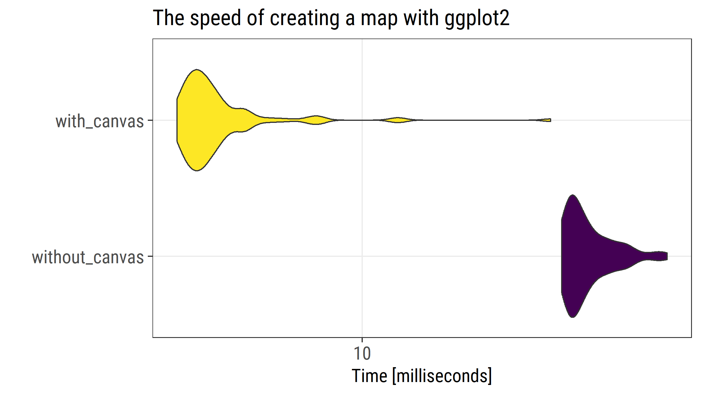

![]()
# load required packages
library(tidyverse) # data manipulation and viz
library(ggthemes) # themes for ggplot2
library(viridis) # the best color palette
library(rgdal) # deal with shapefiles
library(microbenchmark) # measure the speed of executing
library(extrafont) # nice font
myfont <- "Roboto Condensed"
library(RColorBrewer)
# create a canvas
canv_mt <- ggplot(mtcars, aes(hp, mpg, color = cyl))+
coord_cartesian()
# test speed with mocrobenchmark
test <- microbenchmark(
without_canvas = ggplot(mtcars, aes(hp, mpg, color = cyl))+
coord_cartesian()+
geom_point()
,
with_canvas = canv_mt+
geom_point()
,
times = 100
)
test
autoplot(test)+
aes(fill = expr)+
scale_fill_viridis(discrete = T)+
theme_bw(base_size = 15, base_family = myfont)+
theme(legend.position = "none",
axis.text = element_text(size = 15))+
labs(title = "The speed of creating a simple ggplot")
Too wrong; don’t read
Basically, this post turned out to be just a wrong, premature, and unnecessary attempt of code optimization. If you still want to have look, make sure that later you read this post by Thomas Lin Pedersen. You are warned
This post is updated on 2017-07-15
The earlier version had a terminology mistake pointed out by Hadley Wickham. I wrongly called creation time of the plots as rendering time.
One of the nice features of the ggapproach to plotting is that one can save plots as R objects at any step and use later to render and/or modify. I used that feature extensively while creating maps with ggplot2 (see my previous posts: one, two, three, four, five). It is just convenient to first create a canvas with all the theme parameters appropriate for a map, and then overlay the map layer. At some point I decided to check if that workflow was computationally efficient or not. To my surprise, the usage of canvas reduces the creation time of a ggplot quite a lot. To my further surprise, this finding holds for simple plots as well as maps.
Let’s start with a simple check.
Figure 1. Microbenchmark output for a simple plot
The median time of execution is 3.24 milliseconds for the plot without canvas and 2.29 milliseconds for the plot with canvas.
Next, let’s do the same check for a map. For that, I will use the data prepared for one of my earlier posts and recreate the simple map that shows the division of European Union 27 into three subregions.
Figure 2. The map we use to test the plot creation speed
# load the already prepared data
load(url("https://ikashnitsky.github.io/doc/misc/map-subplots/df-27-261-urb-rur.RData"))
load(url("https://ikashnitsky.github.io/doc/misc/map-subplots/spatial-27-261.RData"))
# fortify spatial objects
neib <- fortify(Sneighbors)
bord <- fortify(Sborders)
fort <- fortify(Sn2, region = "id")
# join spatial and statistical data
fort_map <- left_join(df, fort, "id")
# pal for the subregions
brbg3 <- brewer.pal(11,"BrBG")[c(8,2,11)]
# create a blank map
basemap <- ggplot()+
geom_polygon(data = neib,
aes(x = long, y = lat, group = group),
fill = "grey90",color = "grey90")+
coord_equal(ylim = c(1350000,5450000),
xlim = c(2500000, 6600000),
expand = c(0,0))+
theme_map(base_family = myfont)+
theme(panel.border = element_rect(color = "black",size = .5,fill = NA),
legend.position = c(1, 1),
legend.justification = c(1, 1),
legend.background = element_rect(colour = NA, fill = NA),
legend.title = element_text(size = 15),
legend.text = element_text(size = 15))+
labs(x = NULL, y = NULL)
# test speed with mocrobenchmark
test_map <- microbenchmark(
without_canvas =
ggplot()+
geom_polygon(data = neib,
aes(x = long, y = lat, group = group),
fill = "grey90",color = "grey90")+
coord_equal(ylim = c(1350000,5450000),
xlim = c(2500000, 6600000),
expand = c(0,0))+
theme_map(base_family = myfont)+
theme(panel.border = element_rect(color = "black",
size = .5,fill = NA),
legend.position = c(1, 1),
legend.justification = c(1, 1),
legend.background = element_rect(colour = NA, fill = NA),
legend.title = element_text(size = 15),
legend.text = element_text(size = 15))+
labs(x = NULL, y = NULL) +
geom_polygon(data = fort_map,
aes(x = long, y = lat, group = group,
fill = subregion), color = NA)+
scale_fill_manual(values = rev(brbg3)) +
theme(legend.position = "none")
,
with_canvas =
basemap +
geom_polygon(data = fort_map,
aes(x = long, y = lat, group = group,
fill = subregion), color = NA)+
scale_fill_manual(values = rev(brbg3)) +
theme(legend.position = "none")
,
times = 100
)
autoplot(test_map)+
aes(fill = expr)+
scale_fill_viridis(discrete = T)+
theme_bw(base_size = 15, base_family = myfont)+
theme(legend.position = "none",
axis.text = element_text(size = 15))+
labs(title = "The speed of creating a map with ggplot2")Figure 3. Microbenchmark output for a map
The median time of execution is 18.8 milliseconds for the map without canvas and 6.3 milliseconds for the map with canvas.
Conclusion: Use canvas with ggplot2
For the full script to reproduce the results check out this gist